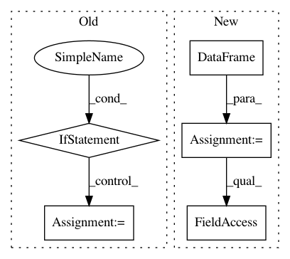

7c960272c5ab4d25a022538f5849addec3e6bfee,loglizer/preprocessing.py,FeatureExtractor,transform,#FeatureExtractor#,71
Before Change
X_df.loc[i, :] = [0] * len(self.events)
event_counts = Counter(X_seq[i])
for event, count in event_counts.items():
if event in self.events:
X_df.loc[i, event] = count
X = X_df.fillna(0).values
num_instance, num_event = X.shape
if self.term_weighting == "tf-idf":
After Change
for i in range(X_seq.shape[0]):
event_counts = Counter(X_seq[i])
X_counts.append(event_counts)
X_df = pd.DataFrame(X_counts)
X_df = X_df.fillna(0)
empty_events = set(self.events) - set(X_df.columns)
for event in empty_events:
X_df[event] = [0] * len(X_df)
X = X_df[self.events].values
if self.oov:
oov_vec = np.sum(X_df[X_df.columns.difference(self.events)].values > 0, axis=1)
X = np.hstack([X, oov_vec.reshape(X.shape[0], 1)])
num_instance, num_event = X.shape
if self.term_weighting == "tf-idf":
In pattern: SUPERPATTERN
Frequency: 4
Non-data size: 5
Instances
Project Name: logpai/loglizer
Commit Name: 7c960272c5ab4d25a022538f5849addec3e6bfee
Time: 2019-02-25
Author: zhujm.home@gmail.com
File Name: loglizer/preprocessing.py
Class Name: FeatureExtractor
Method Name: transform
Project Name: cesium-ml/cesium
Commit Name: 2ab1119596b420cc696a783271d617562ccf7e28
Time: 2017-03-29
Author: brettnaul@gmail.com
File Name: cesium/tests/fixtures.py
Class Name:
Method Name: sample_featureset
Project Name: nilmtk/nilmtk
Commit Name: 5eeca7d385178092790e08c1d5ad6cbcff35d3dc
Time: 2014-12-11
Author: jack-list@xlk.org.uk
File Name: nilmtk/metergroup.py
Class Name: MeterGroup
Method Name: load
Project Name: nilmtk/nilmtk
Commit Name: 1d84abbd2a6644d3e419b34eb0a309baea93276a
Time: 2015-06-30
Author: op106@ecs.soton.ac.uk
File Name: nilmtk/dataset_converters/hes/convert_hes.py
Class Name:
Method Name: _process_meter_in_chunk